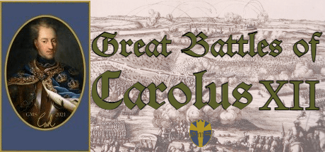

Vår lanseringsfilm
Med guds hjälp, strid för Svea Rikes ära!
Konungen är död, kungaborgen ligger i aska och sveriges folk svälter ihjäl i sträng vinter och missväxt. Med blodvittring sluter nu sveriges fiender ett anfallsförbund. Ryssland, Danmark och Sachsen-Polen stampar vid gränserna. Den femtonårige Konungen står nu ensam med rikets öde i sina händer.
Datorspelet Great battles of Carolus XII är ett enkelt hexagonbaserat strategispel för den stormaktstörstande äventyraren. Här för du i egen hög person befälet över en av europas tappraste och dugligaste arméer. Med den karolinska gå-på andan förväntas du uträtta stordåd.
